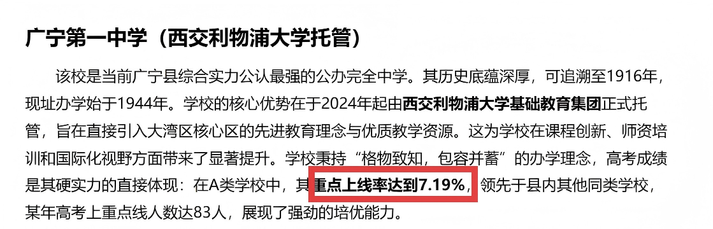
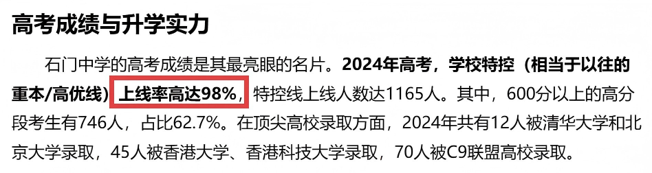

我的老家穷穷（悲）
大中小学校没空调，宿舍木门，市容脏乱差，政府Tan（小声）
不能说就是很落后了，但是发展水平确实差一大截，
人们的思想也相对保守，缺乏创新意识和创业精神
例如重男轻女，立室成家光宗耀祖，“原生家庭”等等特别多
上学的时候也能体会出来，老家那边周围的同学，他们的父母普遍是底层工人，大多数连初中文凭都没有
但是到了佛山，周围同学的父母普遍是中产阶级，甚至是高管
众所周知，广东是使用全国一卷所有省份中，教育水平最差的省份
Do you kwow?
我在佛山度的那所高中，今年高考1500人有800人600分以上，清北20人（我是菜鸡）
我老家县城几千人高考，整个县城没有一个600分的


（应该没人不知道高考总分750分吧）

有些地方穷，就永远地被焊死在“穷”字上了，生态涵养区，其实就是不发展，发展不了，不想管
他不像是发达城市的老城区或者绿化带，就是整体上的落后